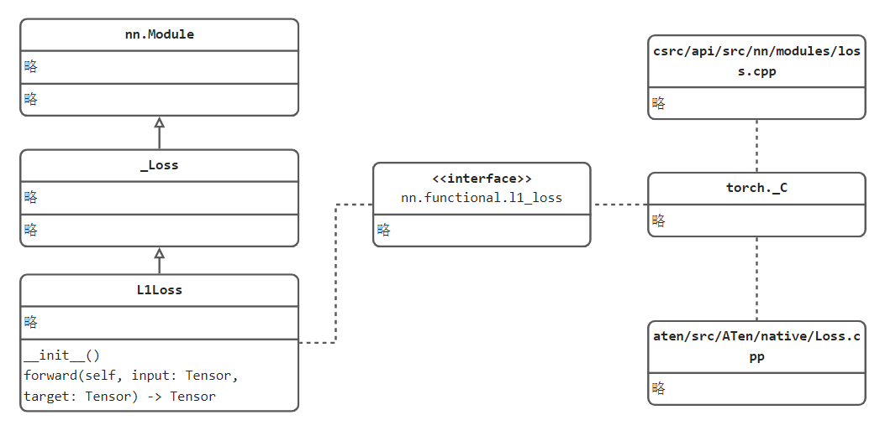
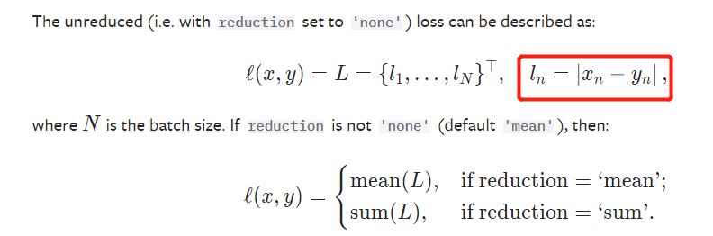

5.1 二十一个损失函数
本节重点为pytorch损失函数实现方式及逻辑，而非具体某个损失函数的公式计算，核心为下图：

损失函数——Loss Function
损失函数（loss function）是用来衡量模型输出与真实标签之间的差异，当模型输出越接近标签，认为模型越好，反之亦然。因此，可以得到一个近乎等价的概念，loss越小，模型越好。这样就可以用数值优化的方法不断的让loss变小，即模型的训练。
针对不同的任务有不同的损失函数，例如回归任务常用MSE(Mean Square Error)，分类任务常用CE（Cross Entropy），这是根据标签的特征来决定的。而不同的任务还可以对基础损失函数进行各式各样的改进，如Focal Loss针对困难样本的设计，GIoU新增相交尺度的衡量方式，DIoU新增重叠面积与中心点距离衡量等等。
在pytorch中提供了二十一个损失函数，如下所示
nn.L1Loss
nn.MSELoss
nn.CrossEntropyLoss
nn.CTCLoss
nn.NLLLoss
nn.PoissonNLLLoss
nn.GaussianNLLLoss
nn.KLDivLoss
nn.BCELoss
nn.BCEWithLogitsLoss
nn.MarginRankingLoss
nn.HingeEmbeddingLoss
nn.MultiLabelMarginLoss
nn.HuberLoss
nn.SmoothL1Loss
nn.SoftMarginLoss
nn.MultiLabelSoftMarginLoss
nn.CosineEmbeddingLoss
nn.MultiMarginLoss
nn.TripletMarginLoss
nn.TripletMarginWithDistanceLoss
本小节讲解仅剖析nn.L1Loss和nn.CrossEntropyLoss这两个损失函数及其衍生函数。其余损失函数可以触类旁通。 核心知识在于损失函数的实现流程，不同的损失函数仅在于计算公式的不同，每个损失函数处理公式可在官方文档查阅。
以最简单的L1Loss出发，观察pytorch的损失函数是如何实现的
1. L1loss
CLASS torch.nn.L1Loss(size_average=None, reduce=None, reduction='mean') 功能： 计算output和target之差的绝对值，可选返回同维度的tensor（reduction=none）或一个标量（reduction=mean/sum）。 计算公式：
参数：
size_average (bool, optional) – 已舍弃使用的变量，功能已经由reduction代替实现，仍旧保留是为了旧版本代码可以正常运行。
reduce (bool, optional) – 已舍弃使用的变量，功能已经由reduction代替实现，仍旧保留是为了旧版本代码可以正常运行。
reduction (string, optional) – 是否需要对loss进行“降维”，这里的reduction指是否将loss值进行取平均（mean）、求和（sum）或是保持原尺寸（none），这一变量在pytorch绝大多数损失函数中都有在使用，需要重点理解。
示例：代码
流程剖析
通过示例代码可知，loss_func是一个类实例，使用方式是loss_func(output, target)。
而nn.L1Loss是一个什么类？提供怎么样的接口来实现loss_func(output, target)的？
可跳转进入nn.L1Loss类定义，可以发现它继承_Loss，继续观察_Loss类，发现它继承nn.Module，既然是一个nn.Module，只需要在其内部实现一个forward()函数，就可以使类实例可以像函数一样被调用。 请看L1Loss类的实现：
class L1Loss(_Loss):
__constants__ = ['reduction']
def __init__(self, size_average=None, reduce=None, reduction: str = 'mean') -> None:
super(L1Loss, self).__init__(size_average, reduce, reduction)
def forward(self, input: Tensor, target: Tensor) -> Tensor:
return F.l1_loss(input, target, reduction=self.reduction)
L1Loss的forward函数正是接收两个变量，然后计算它们之差的绝对值。而具体的实现委托给F.l1_loss函数 继续进入F.l1_loss一探究竟：
def l1_loss(
input: Tensor,
target: Tensor,
size_average: Optional[bool] = None,
reduce: Optional[bool] = None,
reduction: str = "mean",
) -> Tensor:
if has_torch_function_variadic(input, target):
return handle_torch_function(
l1_loss, (input, target), input, target, size_average=size_average, reduce=reduce, reduction=reduction
)
if not (target.size() == input.size()):
warnings.warn(
"Using a target size ({}) that is different to the input size ({}). "
"This will likely lead to incorrect results due to broadcasting. "
"Please ensure they have the same size.".format(target.size(), input.size()),
stacklevel=2,
)
if size_average is not None or reduce is not None:
reduction = _Reduction.legacy_get_string(size_average, reduce)
expanded_input, expanded_target = torch.broadcast_tensors(input, target)
return torch._C._nn.l1_loss(expanded_input, expanded_target, _Reduction.get_enum(reduction))
F.l1_loss函数对输入参数相应的判断，例如传入的两个变量的维度必须一致，否则无法计算l1 loss。
而具体公式的数值计算又委托给了torch._C._nn.l1_loss，torch._C._nn.l1_loss 就已经调用了python的C++拓展，底层代码是用C++语言编写，在python中就无法观察到，从这里大家可以知道pytorch大量的数值运算是借助了C++语言，毕竟python的底层运算比较慢。
关于C++底层代码，可依次观察： https://github.com/pytorch/pytorch/blob/master/torch/csrc/api/src/nn/modules/loss.cpp
#include <torch/nn/modules/loss.h>
namespace F = torch::nn::functional;
namespace torch {
namespace nn {
L1LossImpl::L1LossImpl(const L1LossOptions& options_) : options(options_) {}
void L1LossImpl::reset() {}
void L1LossImpl::pretty_print(std::ostream& stream) const {
stream << "torch::nn::L1Loss()";
}
Tensor L1LossImpl::forward(const Tensor& input, const Tensor& target) {
return F::detail::l1_loss(input, target, options.reduction());
}
https://github.com/pytorch/pytorch/blob/master/aten/src/ATen/native/Loss.cpp
Tensor& l1_loss_out(const Tensor& input, const Tensor& target, int64_t reduction, Tensor& result) {
if (reduction != Reduction::None) {
auto diff = at::sub(input, target);
auto loss = diff.is_complex() ? diff.abs() : diff.abs_();
if (reduction == Reduction::Mean) {
return at::mean_out(result, loss, IntArrayRef{});
} else {
return at::sum_out(result, loss, IntArrayRef{});
}
} else {
auto diff = input.is_complex() ? at::sub(input, target) : at::sub_out(result, input, target);
return at::abs_out(result, diff);
}
}
从上述代码中可以看到，实际的L1Loss公式的实现是
auto diff = at::sub(input, target);
auto loss = diff.is_complex() ? diff.abs() : diff.abs_();
总结一下，Loss的实现流程如下图所示：
首先，损失函数继承Module，并实现forward函数，forward函数中完成具体公式计算；
其次，具体的公式运算委托给nn.functional下函数实现；
最后，pytorch大多的数值运算借助C++代码实现，具体在ATen/native/Loss.cpp
2. CrossEntropyLoss
CLASS torch.nn.CrossEntropyLoss(weight=None, size_average=None, ignore_index=- 100, reduce=None, reduction='mean', label_smoothing=0.0)
功能：
先将输入经过softmax激活函数之后，再计算交叉熵损失。
在早期的pytorch中，是利用nn.LogSoftmax()和 nn.NLLLoss()实现的，现已经通过nn.CrossEntropyLoss()实现，不过官方文档中仍旧有提示：
V1.11.0: "Note that this case is equivalent to the combination of LogSoftmax and NLLLoss."
V1.6.0: "This criterion combines nn.LogSoftmax() and nn.NLLLoss() in one single class.""
补充：小谈交叉熵损失函数
交叉熵损失(cross-entropy Loss) 又称为对数似然损失(Log-likelihood Loss)、对数损失；二分类时还可称之为逻辑斯谛回归损失(Logistic Loss)。交叉熵损失函数表达式为 L = - sigama(y_i * log(x_i))。pytroch这里不是严格意义上的交叉熵损失函数，而是先将input经过softmax激活函数，将向量“归一化”成概率形式，然后再与target计算严格意义上交叉熵损失。
在多分类任务中，经常采用softmax激活函数+交叉熵损失函数，因为交叉熵描述了两个概率分布的差异，然而神经网络输出的是向量，并不是概率分布的形式。所以需要softmax激活函数将一个向量进行“归一化”成概率分布的形式，再采用交叉熵损失函数计算loss。
参数：
weight (Tensor, optional) – 类别权重，用于调整各类别的损失重要程度，常用于类别不均衡的情况。 If given, has to be a Tensor of size C
ignore_index (int, optional) – 忽略某些类别不进行loss计算。
size_average (bool, optional) – 已舍弃使用的变量，功能已经由reduction代替实现，仍旧保留是为了旧版本代码可以正常运行。
reduce (bool, optional) – 已舍弃使用的变量，功能已经由reduction代替实现，仍旧保留是为了旧版本代码可以正常运行。
reduction (string, optional) – 是否需要对loss进行“降维”，这里的reduction指是否将loss值进行取平均（mean）、求和（sum）或是保持原尺寸（none），这一变量在pytorch绝大多数损失函数中都有在使用，需要重点理解。
label_smoothing (float, optional) – 标签平滑参数，一个用于减少方差，防止过拟合的技巧。详细请看论文《 Rethinking the Inception Architecture for Computer Vision》。通常设置为0.01-0.1之间，虽然理论值域为：A float in [0.0, 1.0].
C++底层代码实现： https://github.com/pytorch/pytorch/blob/master/aten/src/ATen/native/LossNLL.cpp
Tensor cross_entropy_loss(
const Tensor& self,
const Tensor& target,
const c10::optional<Tensor>& weight,
int64_t reduction,
int64_t ignore_index,
double label_smoothing) {
Tensor ret;
if (self.sizes() == target.sizes()) {
// Assume soft targets when input and target shapes are the same
TORCH_CHECK(at::isFloatingType(target.scalar_type()),
"Expected floating point type for target with class probabilities, got ", target.scalar_type());
TORCH_CHECK(ignore_index < 0, "ignore_index is not supported for floating point target");
// See [Note: hacky wrapper removal for optional tensor]
c10::MaybeOwned<Tensor> weight_maybe_owned = at::borrow_from_optional_tensor(weight);
const Tensor& weight_ = *weight_maybe_owned;
ret = cross_entropy_loss_prob_target(self, target, weight_, reduction, label_smoothing);
} else if (label_smoothing > 0.0) {
TORCH_CHECK(label_smoothing <= 1.0, "label_smoothing must be between 0.0 and 1.0. Got: ", label_smoothing);
// See [Note: hacky wrapper removal for optional tensor]
c10::MaybeOwned<Tensor> weight_maybe_owned = at::borrow_from_optional_tensor(weight);
const Tensor& weight_ = *weight_maybe_owned;
ret = cross_entropy_loss_label_smoothing(self, target, weight_, reduction, ignore_index, label_smoothing);
} else {
auto class_dim = self.dim() == 1 ? 0 : 1;
ret = at::nll_loss_nd(
at::log_softmax(self, class_dim, self.scalar_type()),
target,
weight,
reduction,
ignore_index);
}
return ret;
}
Tensor & nll_loss_out(const Tensor & self, const Tensor & target, const c10::optional<Tensor>& weight_opt, int64_t reduction, int64_t ignore_index, Tensor & output) {
// See [Note: hacky wrapper removal for optional tensor]
c10::MaybeOwned<Tensor> weight_maybe_owned = at::borrow_from_optional_tensor(weight_opt);
const Tensor& weight = *weight_maybe_owned;
Tensor total_weight = at::empty({0}, self.options());
return std::get<0>(at::nll_loss_forward_out(output, total_weight, self, target, weight, reduction, ignore_index));
}
Tensor nll_loss(const Tensor & self, const Tensor & target, const c10::optional<Tensor>& weight_opt, int64_t reduction, int64_t ignore_index) {
// See [Note: hacky wrapper removal for optional tensor]
c10::MaybeOwned<Tensor> weight_maybe_owned = at::borrow_from_optional_tensor(weight_opt);
const Tensor& weight = *weight_maybe_owned;
return std::get<0>(at::nll_loss_forward(self, target, weight, reduction, ignore_index));
}
Tensor nll_loss_nd(
const Tensor& self,
const Tensor& target,
const c10::optional<Tensor>& weight,
int64_t reduction,
int64_t ignore_index) {
if (self.dim() < 1) {
TORCH_CHECK_VALUE(
false, "Expected 1 or more dimensions (got ", self.dim(), ")");
}
if (self.dim() != 1 && self.sizes()[0] != target.sizes()[0]) {
TORCH_CHECK_VALUE(
false,
"Expected input batch_size (",
self.sizes()[0],
") to match target batch_size (",
target.sizes()[0],
").");
}
Tensor ret;
Tensor input_ = self;
Tensor target_ = target;
if (input_.dim() == 1 || input_.dim() == 2) {
ret = at::nll_loss(input_, target_, weight, reduction, ignore_index);
} else if (input_.dim() == 4) {
ret = at::nll_loss2d(input_, target_, weight, reduction, ignore_index);
} else {
// dim == 3 or dim > 4
auto n = input_.sizes()[0];
auto c = input_.sizes()[1];
auto out_size = input_.sizes().slice(2).vec();
out_size.insert(out_size.begin(), n);
if (target_.sizes().slice(1) != input_.sizes().slice(2)) {
TORCH_CHECK(
false,
"Expected target size ",
IntArrayRef(out_size),
", got ",
target_.sizes());
}
input_ = input_.contiguous();
target_ = target_.contiguous();
// support empty batches, see #15870
if (input_.numel() > 0) {
input_ = input_.view({n, c, 1, -1});
} else {
input_ = input_.view({n, c, 0, 0});
}
if (target_.numel() > 0) {
target_ = target_.view({n, 1, -1});
} else {
target_ = target_.view({n, 0, 0});
}
if (reduction != Reduction::None) {
ret = at::nll_loss2d(input_, target_, weight, reduction, ignore_index);
} else {
auto out =
at::nll_loss2d(input_, target_, weight, reduction, ignore_index);
ret = out.view(out_size);
}
}
return ret;
}
示例：代码
CrossEntropyLoss使用注意事项：
- target需要的是int类型，不需要one-hot向量形式；
- 类别需要从0开始计数，即10分类任务，类别index应当为0,1,2,3,4,5,6,7,8,9
小结
本小节重点剖析两个损失函数，学习pytorch损失函数的实现逻辑，请详细观察以下关系图，对后续编写其它千奇百怪的损失函数很有帮助。
在深度学习中，损失函数还有很多，这里无法一一列举，感兴趣可以了解一下：
https://github.com/JunMa11/SegLoss

以及目标检测中的IoU、GIoU、DIoU、CIoU等。